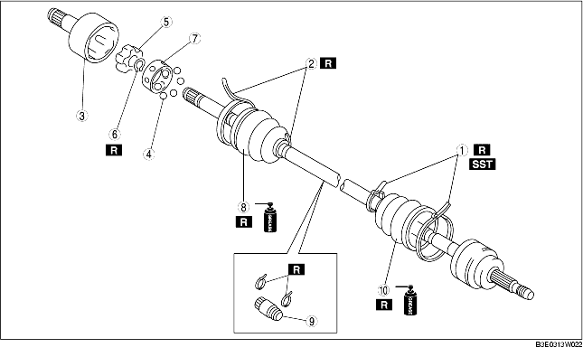

1. Verwijder de onderdelen in de aangegeven volgorde, zie de tabel.
2. Plaats de onderdelen in omgekeerde volgorde.

.
1. Beweeg de traagheidsdemper in de richting van het wiel.
2. Beweeg de hoes en de kooi in de richting van het wiel.
3. Tik met een kunststof hamer op de binnenring terwijl de borgveer wordt opengehouden en verwijder de binnenring van de aandrijfas.
1. Plaats de traagheidsdemper zoals in de afbeelding is aangegeven.
2. Plaats een nieuwe hoesklem voor de stofhoes en de traagheidsdemper.
1. Vul de hoes aan de wielzijde met het voorgeschreven vet.
2. Plaats de hoes terwijl de spiebanen nog afgeplakt zijn met de tape die voor het verwijderen van de hoes werd aangebracht.
3. Verwijder de tape.
1. Tik met een kunststof hamer op de binnenring terwijl de borgveer wordt opengehouden en plaats de binnenring op de aandrijfas.
2. Breng de merktekens in lijn en plaats de kogels en de kooi op de binnenring zoals aangegeven in de afbeelding.
1. Vul het tripodehuis en de hoes (transmissiezijde) met het voorgeschreven vet.
2. Plaats het tripodehuis op de as.
3. Plaats de hoes.
4. Breng de aandrijfas op de standaardlengte.
5. Licht de kleine opening van de hoezen op met een schroevendraaier omwikkeld met een doek en laat de lucht uit de stofhoes lopen.
6. Controleer of de lengte van de aandrijfas aan de specificaties voldoet.